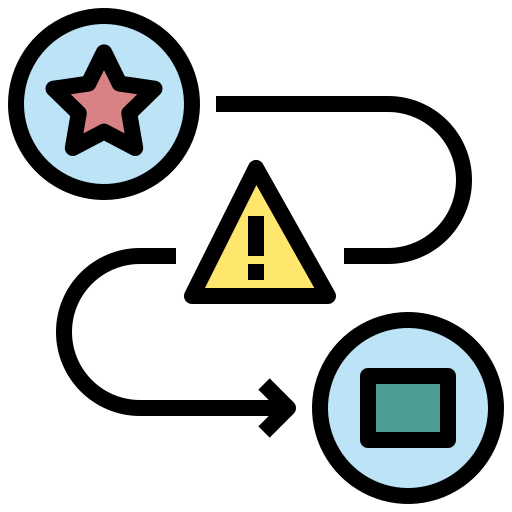

|
O recurso Página, cria uma tela que exibe o conteúdo criado pelo professor. Funcionando de forma semelhante ao Livro, mas sendo apenas uma tela. |
A página pode exibir diferentes tipos de conteúdos, como: textos, imagens, áudio, vídeo e combinações de todos citados. |
|
As páginas são mais acessíveis do que o upload de documentos, pois não será necessário fazer download/upload de nada.  |
Acessibilidade e Utilização
As página são ideais para uso caso você: precise atualizá-las com frequência; o documento não precisa ser impresso; seus alunos podem precisar consultá-lo (em aparelhos móveis, por exemplo). |
|
Vídeo Tutorial de Configuração e Aplicabilidade: |
Dicas de Uso |